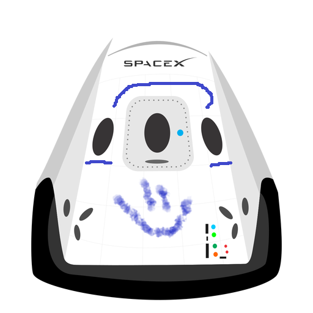

Hyperblog Tu Blog de cabecera
¿Quien es Samuel?
Y este es el párrafo de inicio donde vamos a explicar las cosas increíbles que se pueden hacer con ramas.

Los blogs son la mejor forma de compartir información y tus ideas. Mucho más que ir a conferencias o salir en Youtube. Exepto si eres Rockstart. Pero estadisticamente no lo eres... por ahora.
Subscribete y dale like